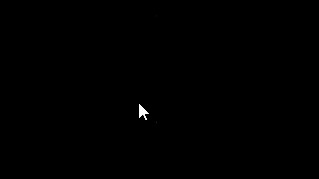

С# DLL библиотека с демонстрационным приложением для создания, тренировки, валидации моделей нейронных сетей
- Построение нейронных сетей различной структуры на основе ООП-методологии
- Тренировка нейронных сетей с заданной скоростью обучения, итерациями, эпохами, обучающими выборками
- Пользовательский интерфейс для построения многослойного персептрона с любым количеством слоев и нейронов
- Функция активации - сигмоида
- Законы распределения начальных значений весов: нормальный и равномерный
- Валидация модели с построением в реальном времени графиков ошибок, значений весов, входных и выходных сигналов
- Сохранение модели в файл на любом этапе обучения, загрузка из файла с просмотром конфигурации сети
- DLL для применения нейронных сетей в проектах
- Расчет производительности обучения с индикацией оставшегося времени до завершения
- Обучение модели распознавать изображения. Протестирован набор MNIST в png формате. Точность 95.5% для 10 цифр. Тренировка выполнялась за 5 эпох по 50000 картинок, валидация - 5000)
- Обучение модели распознавать зашумленные синусоидальные сигналы
- Рисование мышью для обучения нейронной сети распознавать произвольные изображения пользователя
- Аппроксимация сигналов с помощью нейронной сети



Тест распознавания символов и цифр
Аппроксимация произвольного сигнала многослойным персептроном
Создание и обучение сети + быстрый тест на распознавание 5 цифр MNIST
Создание и обучение сети + тест на распознавание 25 зашумленных синусоидальных сигналов
Построение и обучение двух сетей: для распознавания цифр и символов + сохранение моделей и загрузка из файлов с валидацией
Описание
Функционал демонстрационного проекта